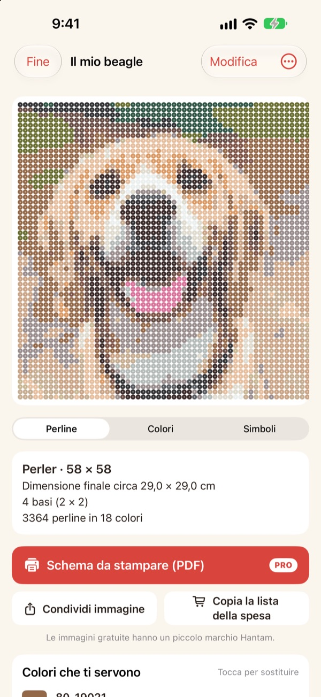
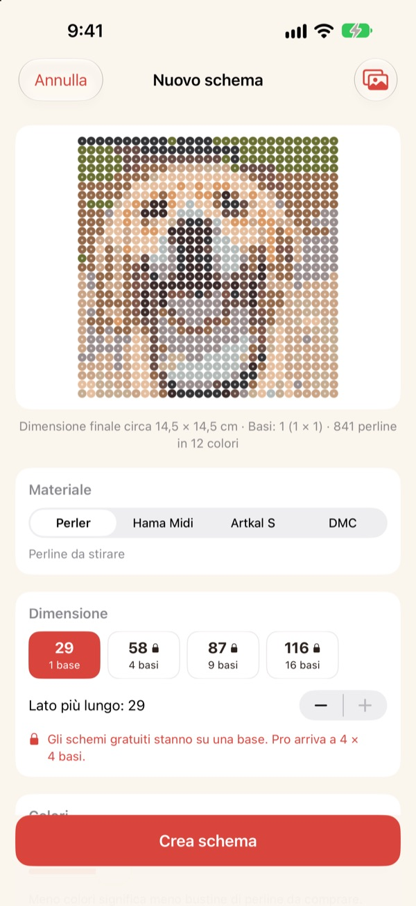
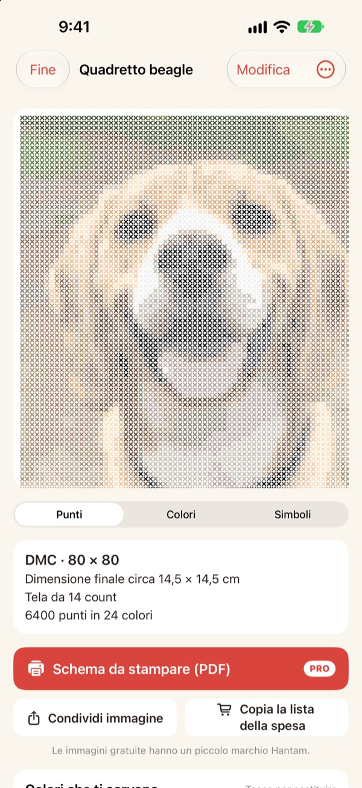
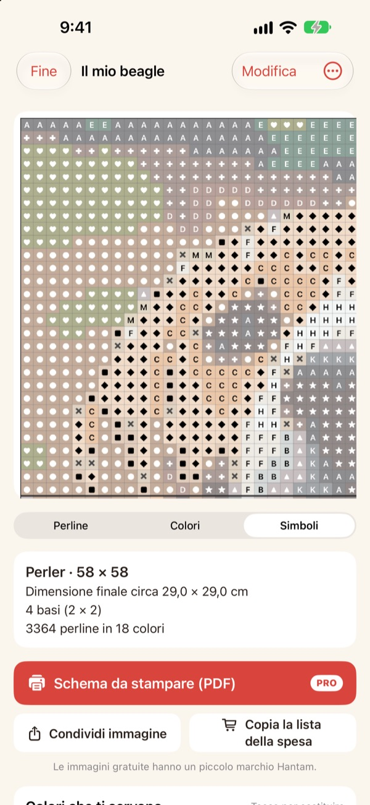
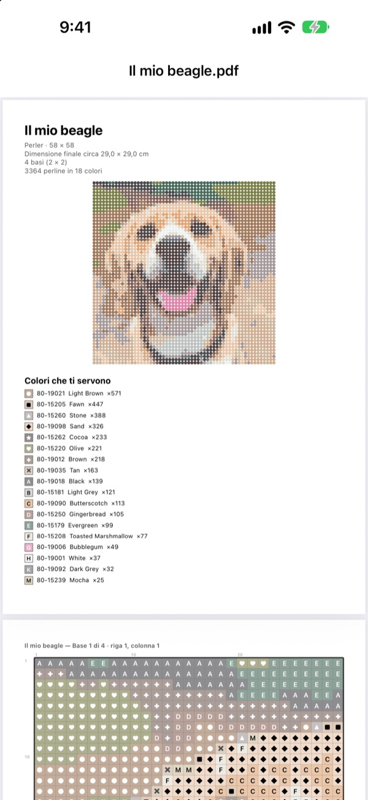

Da una foto
nasce uno schema
Scegli una foto del tuo animale, del tuo viso o del tuo personaggio preferito. Hantam la trasforma in uno schema per perline da stirare o punto croce, con colori che puoi davvero comprare.
Gratis per schemi di una basetta. Le foto non lasciano il tuo iPhone.

Prova con una foto
Lo stesso abbinamento dei colori che usa l'app, con la vera cartella colori Perler. Cambia dimensione e numero di colori, o prova con una tua foto.
Fare uno schema è facile. Abbinarlo a perline vere, molto meno
Se pixeli una foto con un qualsiasi editor, ottieni colori che nessuna perlina e nessun filo hanno. Poi devi indovinare da quale barattolo prendere ogni casella e contare quante comprarne per colore. Hantam sceglie solo tra colori in vendita e ti dice esattamente quante ne servono.
Colori veri, numeri veri
Scegli perline Perler, Hama Midi o Artkal S, oppure filo DMC. Ogni casella prende un colore che il marchio vende davvero, con il suo numero.
Dimensione e numero di colori li decidi tu. Gli schemi grandi vengono divisi in basette 29 × 29.

Anche punto croce
Scegli il filo DMC e la stessa foto diventa uno schema a punto croce. Seleziona la tela Aida da 11, 14, 16 o 18 e Hantam mostra la misura finale e quanti punti servono per ogni colore.

Sai esattamente cosa comprare
Passa allo schema a simboli e segui casella per casella, con linee spesse a ogni bordo di basetta o ogni 10 punti. Vedi quante perline servono per colore e usa Copia la lista della spesa con un tocco.
Tocca una casella per cambiarla o sostituisci un colore con un altro ovunque.

Stampa e inizia
Con Pro esporti uno Schema da stampare (PDF): prima l'elenco dei colori, poi gli schemi a simboli, una basetta per pagina.

Tre passi fino allo schema
- 1
Scegli una foto
Animali, volti, loghi, personaggi: va bene tutto. Le foto con un soggetto ben chiaro vengono meglio.
- 2
Scegli perline o filo
Decidi marchio, dimensione e numero di colori.
- 3
Crea
Segui lo schema sullo schermo o stampalo con Pro.
Materiali e dimensioni
- Perler · Hama Midi · Artkal S
- Perline da stirare, basette 29 × 29, ogni perlina circa 5 mm
- DMC
- Filo per punto croce su tela Aida da 11, 14, 16 o 18
- Gratis
- Perline fino a 1 basetta (29 caselle), filo fino a 40 punti sul lato lungo
- Pro
- Perline fino a 4 × 4 basette (116 caselle), filo fino a 200 punti
- Colori
- Da 2 a 50 per schema
Perler, Hama, Artkal e DMC sono marchi dei rispettivi proprietari. Hantam non è affiliata a nessuno di loro. I colori sullo schermo possono essere leggermente diversi da quelli reali.
Inizia gratis. Passa a Pro per schemi grandi e stampa.
Gratis
- Schemi fino a una basetta o 40 punti
- Tutti i marchi: Perler, Hama, Artkal e DMC
- Quantità per colore, lista della spesa e cambio colori
- Fino a 3 schemi salvati
- Immagini da condividere con un piccolo marchio Hantam
Hantam Pro
- Schemi in PDF da stampare
- Fino a 4 × 4 basette o 200 punti
- Schemi salvati senza limiti
- Immagini senza marchio
- Tutti gli strumenti di pixel art
Abbonamento mensile o annuale, oppure acquisto unico a vita
Puoi anche regalare Pro a un amico direttamente dall'app.
Domande frequenti
Le mie foto vengono caricate da qualche parte?
No. Foto e schemi vengono elaborati e salvati solo sul tuo iPhone.
I colori sono un po' diversi dalle mie perline.
Lo schermo mostra i colori in modo diverso da plastica e filo. Tocca un colore nell'elenco per sostituirlo con uno più simile dello stesso marchio.
Quanto può essere grande uno schema?
Gratis, una basetta 29 × 29 o 40 punti sul lato lungo. Con Pro, fino a 4 × 4 basette (116 perline) o 200 punti.
Quali foto vengono meglio?
Quelle con un solo soggetto e uno sfondo semplice. Meno colori significa uno schema più pulito: se il risultato sembra confuso, riduci il numero di colori.
Posso ancora fare pixel art?
Sì. Pixelare le foto, disegnare seguendo 110 esempi e animare fotogramma per fotogramma c'è ancora tutto. Tutti gli strumenti di pixel art sono inclusi in Pro.
Come ripristino l'acquisto?
Apri le impostazioni dell'app e tocca Ripristina acquisti. Usa lo stesso Apple Account con cui hai comprato Pro.
Come annullo l'abbonamento?
Vai in Impostazioni dell'iPhone › il tuo nome › Abbonamenti e scegli Hantam. L'accesso a vita è un pagamento unico e non si rinnova.
Come segnalo un problema o propongo un'idea?
Il modo più rapido è inviare un feedback dalle impostazioni dell'app. Puoi anche scrivere all'indirizzo qui sotto o mandare un DM su Instagram (@lee25_ios).
Domande, segnalazioni e idee sono benvenute a leeo@kakao.com.